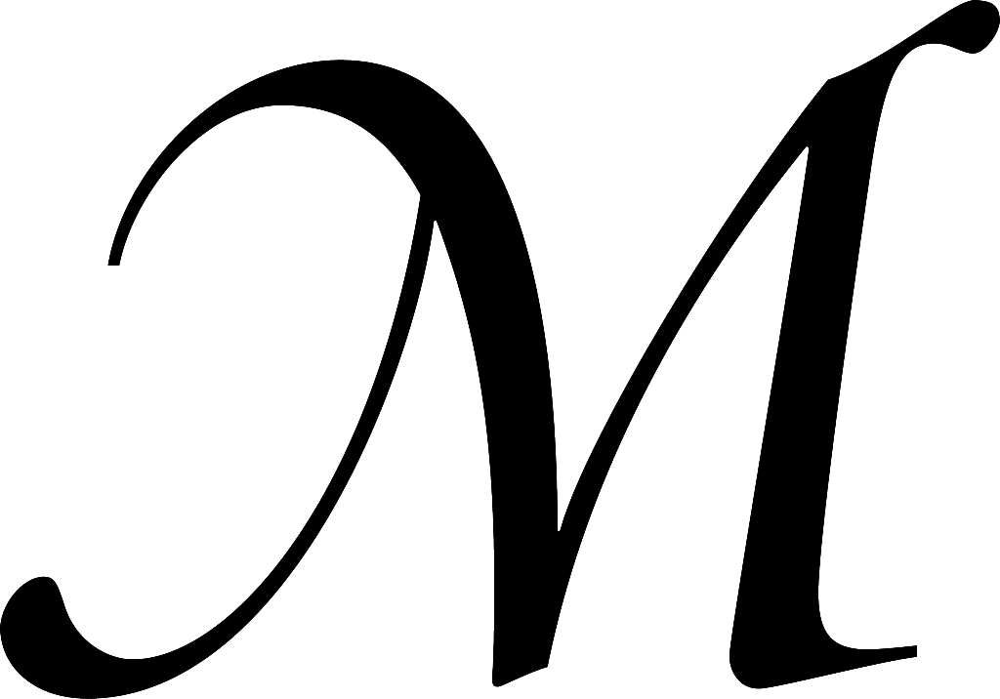

Hyperblog
My mega super duper blog so incredibly omg
Este es el título atractivo e interesante del post
Y este es el párrafo de inicio donde vamos a explicar las cosas increíbles de no se qué.

Los blogs super mega wow y de no mames te cagas. Ya no se con que más llenar este parrafo ademaás de talvez las palabras nuevas que ido aprendiendo leyendo "Historia de un alma"... Eso haré, además de palabras escribiré las frases que más me gustan... o almenos de ahora en adelante.
- Asir: Tomar o agarrar a alguien o algo, especialmente con las manos.
- Hastío: Aburrimiento muy grande.
Desde aquí empezaré mi lista de frases con cita: